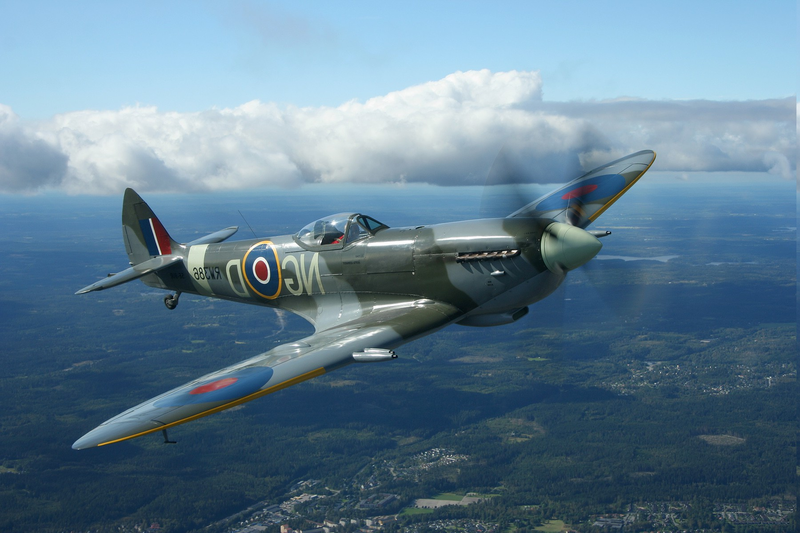
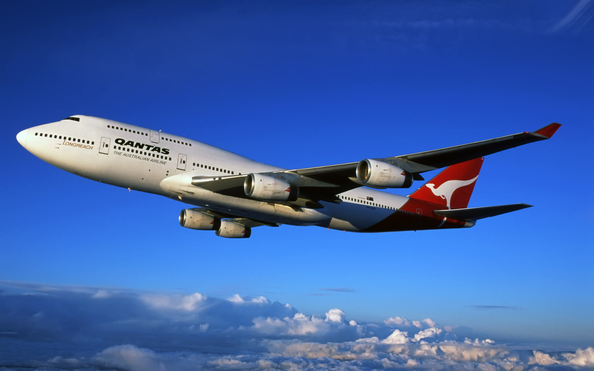

Welcome to AviApp
The idea of AviApp is to bring together everyone in the avation community and create the largest
database for plane spooters there is.
My hope is that we can all get along and enjoy some of the best aircraft in the world.
 There are many types of planes and many types of pictures that can be taking but as a community we need
to accept that everyone is at a different level, has different equipment and different taste.
There are many types of planes and many types of pictures that can be taking but as a community we need
to accept that everyone is at a different level, has different equipment and different taste.
 Some of us like miltary planes, and my hope is that we can create one of the largest databases of
mordern and old planes, as there is so many from when we first took flight in back in 1910.
Some of us like miltary planes, and my hope is that we can create one of the largest databases of
mordern and old planes, as there is so many from when we first took flight in back in 1910.

We also all have opioins about different planes and what are favoirts are and what era's we like but
when we're out planespotting we should all try and get along and share these opioions

I do hope we can do this and try and bring this wonderful hobby to as many people as possible, please
enjoy this app to help along the way. Vist about for infomation about me or the app.
Heres you loacation
GPS
long={{long}}, lat={{lat}}
 {{movie.Title}}
{{movie.Year}}
{{movie.Title}}
{{movie.Year}}